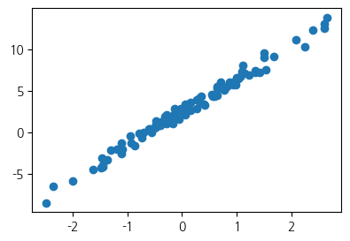
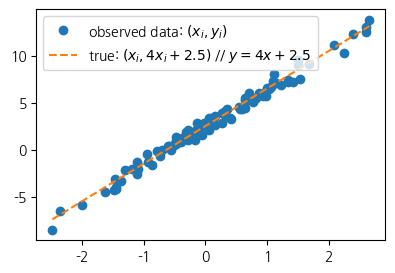
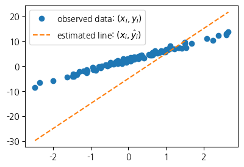
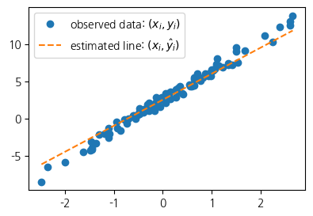
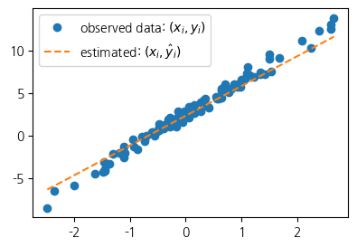
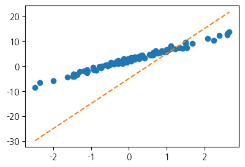
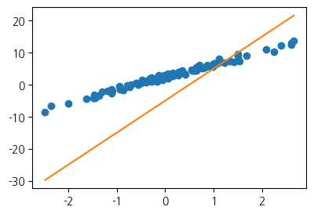
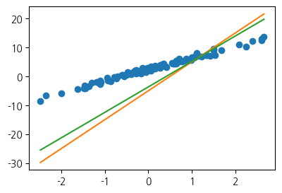
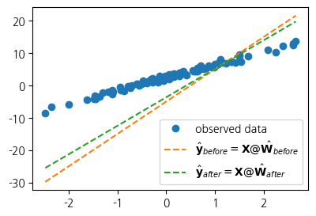
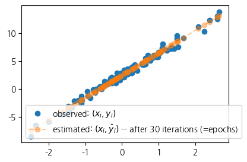

import torch
import matplotlib.pyplot as plt 1. imports
plt.rcParams['figure.figsize'] = (4.5, 3.0)2. 회귀모형
A. 아이스 아메리카노 (가짜자료)
- 카페주인 이상민씨는 온도와 아이스 아메리카노 판매량이 관계가 있다는 것을 확인하기 위해 하래의 100개의 데이터를 모았다.
temp = [-2.4821, -2.3621, -1.9973, -1.6239, -1.4792, -1.4635, -1.4509, -1.4435,
-1.3722, -1.3079, -1.1904, -1.1092, -1.1054, -1.0875, -0.9469, -0.9319,
-0.8643, -0.7858, -0.7549, -0.7421, -0.6948, -0.6103, -0.5830, -0.5621,
-0.5506, -0.5058, -0.4806, -0.4738, -0.4710, -0.4676, -0.3874, -0.3719,
-0.3688, -0.3159, -0.2775, -0.2772, -0.2734, -0.2721, -0.2668, -0.2155,
-0.2000, -0.1816, -0.1708, -0.1565, -0.1448, -0.1361, -0.1057, -0.0603,
-0.0559, -0.0214, 0.0655, 0.0684, 0.1195, 0.1420, 0.1521, 0.1568,
0.2646, 0.2656, 0.3157, 0.3220, 0.3461, 0.3984, 0.4190, 0.5443,
0.5579, 0.5913, 0.6148, 0.6469, 0.6469, 0.6523, 0.6674, 0.7059,
0.7141, 0.7822, 0.8154, 0.8668, 0.9291, 0.9804, 0.9853, 0.9941,
1.0376, 1.0393, 1.0697, 1.1024, 1.1126, 1.1532, 1.2289, 1.3403,
1.3494, 1.4279, 1.4994, 1.5031, 1.5437, 1.6789, 2.0832, 2.2444,
2.3935, 2.6056, 2.6057, 2.6632]sales= [-8.5420, -6.5767, -5.9496, -4.4794, -4.2516, -3.1326, -4.0239, -4.1862,
-3.3403, -2.2027, -2.0262, -2.5619, -1.3353, -2.0466, -0.4664, -1.3513,
-1.6472, -0.1089, -0.3071, -0.6299, -0.0438, 0.4163, 0.4166, -0.0943,
0.2662, 0.4591, 0.8905, 0.8998, 0.6314, 1.3845, 0.8085, 1.2594,
1.1211, 1.9232, 1.0619, 1.3552, 2.1161, 1.1437, 1.6245, 1.7639,
1.6022, 1.7465, 0.9830, 1.7824, 2.1116, 2.8621, 2.1165, 1.5226,
2.5572, 2.8361, 3.3956, 2.0679, 2.8140, 3.4852, 3.6059, 2.5966,
2.8854, 3.9173, 3.6527, 4.1029, 4.3125, 3.4026, 3.2180, 4.5686,
4.3772, 4.3075, 4.4895, 4.4827, 5.3170, 5.4987, 5.4632, 6.0328,
5.2842, 5.0539, 5.4538, 6.0337, 5.7250, 5.7587, 6.2020, 6.5992,
6.4621, 6.5140, 6.6846, 7.3497, 8.0909, 7.0794, 6.8667, 7.4229,
7.2544, 7.1967, 9.5006, 9.0339, 7.4887, 9.0759, 11.0946, 10.3260,
12.2665, 13.0983, 12.5468, 13.8340]- temp는 평균기온, sales는 아이스 아메리카노 판매량
- 그래프를 그려보자
plt.plot(temp,sales,'o')
- 오늘 평균 기온이 0.5도이면 아이스 아메리카노가 얼마나 팔릴까?
B. 자료를 만든 방법
- 방법1 : \(y_i= w_0+w_1 x_i +\epsilon_i = 2.5 + 4x_i +\epsilon_i, \quad i=1,2,\dots,n\)
torch.manual_seed(43052)
x,_ = torch.randn(100).sort()
eps = torch.randn(100)*0.5
y = x * 4 + 2.5 + eps- sort()를 하면 인덱스 항이 생겨서 필요없으므로 _에 저장
x[:5], y[:5](tensor([-2.4821, -2.3621, -1.9973, -1.6239, -1.4792]),
tensor([-8.5420, -6.5767, -5.9496, -4.4794, -4.2516]))- 방법2: \({\bf y}={\bf X}{\bf W} +\boldsymbol{\epsilon}\)
- \({\bf y}=\begin{bmatrix} y_1 \\ y_2 \\ \dots \\ y_n\end{bmatrix}, \quad {\bf X}=\begin{bmatrix} 1 & x_1 \\ 1 & x_2 \\ \dots \\ 1 & x_n\end{bmatrix}, \quad {\bf W}=\begin{bmatrix} 2.5 \\ 4 \end{bmatrix}, \quad \boldsymbol{\epsilon}= \begin{bmatrix} \epsilon_1 \\ \dots \\ \epsilon_n\end{bmatrix}\)
X = torch.stack([torch.ones(100),x],axis=1)
W = torch.tensor([[2.5],[4.0]])
y = X@W + eps.reshape(100,1)
x = X[:,[1]]X[:5,:], y[:5,:](tensor([[ 1.0000, -2.4821],
[ 1.0000, -2.3621],
[ 1.0000, -1.9973],
[ 1.0000, -1.6239],
[ 1.0000, -1.4792]]),
tensor([[-8.5420],
[-6.5767],
[-5.9496],
[-4.4794],
[-4.2516]]))- true 와 관측값(observed data) 동시에 시각화
plt.plot(x,y,'o',label=r"observed data: $(x_i,y_i)$")
plt.plot(x,2.5+4*x,'--',label=r"true: $(x_i, 4x_i+2.5)$ // $y=4x+2.5$ ")
plt.legend()
C. 회귀분석
- 관측한 자료 \((x_i,y_i)\) 이 선형성을 가지고 있을 때 이를 파악하여 새로운 \(x\)가 주어졌을 때 \(\hat{y}\)(예측값)을 구할 수 있는 적당한 추세선을 찾는 것
- 좀 더 정확하게 말하면 \((x_1,y_1) \dots (x_n,y_n)\) 으로
\(\begin{bmatrix} \hat{w}_0 \\ \hat{w}_1 \end{bmatrix}\) 를 최대한 \(\begin{bmatrix} 2.5 \\ 4 \end{bmatrix}\)와 비슷하게 찾는 것.
given data : \(\big\{(x_i,y_i) \big\}_{i=1}^{n}\)
parameter: \({\bf W}=\begin{bmatrix} w_0 \\ w_1 \end{bmatrix}\)
estimated parameter: \({\bf \hat{W}}=\begin{bmatrix} \hat{w}_0 \\ \hat{w}_1 \end{bmatrix}\)
- 추세선을 그리는 행위 = \((w_0,w_1)\)을 선택하는일
4. 손실함수
- \((\hat{w}_0,\hat{w}_1)=(-5,10)\)을 선택하여 선을 그려보고 적당한지 판단해보자
plt.plot(x,y,'o',label=r"observed data: $(x_i,y_i)$")
What = torch.tensor([[-5.0],[10.0]])
plt.plot(x,X@What,'--',label=r"estimated line: $(x_i,\hat{y}_i)$")
plt.legend()
- 기울기와 절편 모두 너무 다르다
- \((\hat{w}_0,\hat{w}_1)=(2.5,3.5)\)을 선택하여 선을 그려보고 적당한지 판단해보자
plt.plot(x,y,'o',label=r"observed data: $(x_i,y_i)$")
What = torch.tensor([[2.5],[3.5]])
plt.plot(x,X@What,'--',label=r"estimated line: $(x_i,\hat{y}_i)$")
plt.legend()
- 기울기가 살짝 다른 듯 하다
- \((\hat{w}_0,\hat{w}_1)=(2.3,3.5)\)을 선택하여 선을 그려보고 적당한지 판단해보자
plt.plot(x,y,'o',label=r"observed data: $(x_i,y_i)$")
What = torch.tensor([[2.3],[3.5]])
plt.plot(x,X@What,'--',label=r"estimated: $(x_i,\hat{y}_i)$")
plt.legend()
- \((\hat{w}_0,\hat{w}_1)=(2.5,3.5)\)를 했을 때와 \((2.3,3,5)\) 로 했을 때 중 어떤 것이 더 적당한가?
A. loss 개념
- (2.5,3.5) 가 더 적당해야할 것 같긴 한데 육안으로 판단 어려움
- 이를 수식화하기 위해서 : loss의 개념 사용
- \(loss = \sum_{i=1}^{n}(y_i- \hat{y}_i)^2 = \sum_{i=1}^{n}\big(y_i - (\hat{w}_0+\hat{w}_1x_i)\big)^2\)
\(=({\bf y}-\hat{\bf y})^\top({\bf y}-\hat{\bf y})=({\bf y}-{\bf X}\hat{\bf W})^\top({\bf y}-{\bf X}\hat{\bf W})\)
B. loss의 특징
- \(y_i \approx \hat{y}_i\) 일수록 loss 값이 작음
- \(y_i \approx \hat{y}_i\) 이 되도록 \((\hat{w}_0, \hat{w}_1)\)을 잘 찍으면 loss 값이 작음
- 주황색 점선이 “적당할수록” loss 값이 작음
C. loss 사용
- 방법1 : \(\sum_{i=1}^{n}(y_i- \hat{y}_i)^2\)
What = torch.tensor([[2.5],[3.5]])
print(f"loss: {torch.sum((y - X@What)**2)}")
What = torch.tensor([[2.3],[3.5]])
print(f"loss: {torch.sum((y - X@What)**2)}")loss: 55.074012756347656
loss: 59.3805046081543- 방법2 : \(({\bf y}-\hat{\bf y})^\top({\bf y}-\hat{\bf y})\)
What = torch.tensor([[2.5],[3.5]])
print(f"loss: {(y - X@What).T @ (y - X@What)}")
What = torch.tensor([[2.3],[3.5]])
print(f"loss: {(y - X@What).T @ (y - X@What)}")loss: tensor([[55.0740]])
loss: tensor([[59.3805]])5. 파이토치를 이용한 반복추정
- 추정 전략 : 손실함수 + 경사하강법 * 1단계 : 아무 점선 긋기 * 2단계 : 1단계의 점선보다 loss값이 작은 하나의 직선으로 변경 * 3단계 : 1,2단계 반복
A. 1단계 - 최초 점선
- What 아무렇게나 설정
What = torch.tensor([[-5.0],[10.0]])
Whattensor([[-5.],
[10.]])yhat = X@Whatplt.plot(x,y,'o')
plt.plot(x,yhat.data,'--')
B. 2단계 - update
- ‘적당한 정도’ : loss 값이 작을수록 적당함
plt.plot(x,y,'o')
plt.plot(x,yhat)
loss = torch.sum((y-yhat)**2)
losstensor(8587.6875)- 현재 loss(=8587.6875)를 줄여야함
- 최종적으로loss를 최소로 하는 \((\hat{w}_0,\hat{w}_1)\)을 구해야함
- 함수의 최대값, 최소값을 컴퓨터로 찾는것 : ‘최적화’
- 최적화의 방법 : 경사하강법
- 경사하강법 (1차원)
- 임의의 점을 찍음
- 그 점에서 순간기울기를 구함 (접선) <– 미분
- 순간기울기(=미분계수)의 부호와 반대방향으로 점을 이동
- 기울기의 절대값 크기와 비례하여 보폭(=움직이는 정도)을 조절 \(\to\) \(\alpha\)를 도입
- 최종수식 :\(\hat{w} \leftarrow \hat{w} - \alpha \times \frac{\partial}{\partial w}loss(w)\)
- 경사하강법 (2차원)

- 임의의 점을 찍음
- 그 점에서 순간기울기를 구함 (접평면) <– 편미분
- 순간기울기(=미분계수)의 부호와 반대방향으로 각각 점을 이동
- 기울기의 절대값 크기와 비례하여 보폭(=움직이는 정도)을 각각 조절 \(\to\) \(\alpha\)를 도입
- 경사하강법 : loss를 줄이도록 \(\hat{W}\)를 개선하는 방법
- 수정값 = 원래값 - \(\alpha\) \(\times\) 기울어진 크기(=미분계수)
- 미분계수와 반대방향으로 이동해야하기 때문에 마이너스 부호 사용
- \(\alpha\)는 전체적인 보폭 크기 결정, 클수록 한번에 update에서 움직임이 큼
- 우리가 구하고 싶은 것
- \(\hat{W}^{LSE}=\underset{\hat{W}}argmin ~ loss(\hat{W})\)
- 요약
- x,X,W,y // X = [1 x], W = [w0, w1] (회귀분석에서는 W=β)
- 회귀모형: y=X@W+ϵ = X@β+ϵ
- true: E(y)=X@W
- observed: (x,y)
- estimated W = What = [w0hat, w1hat]’ <– 아무값이나넣음
- estimated y = yhat = X@What = X@β̂
- loss = yhat이랑 y랑 얼마나 비슷한지 = sum((y-yhat)^2)
- (x,y) 보고 최적의 선분을 그리는것 = loss를 가장 작게 만드는 What = [w0hat, w1hat] 를 찾는것
- 전략
- 아무 What나 찍는다
- 그거보다 더 나은 What을 찾는다.
- 1-2를 반복한다.
- 전략2가 어려운데, 이를 수행하는 방법이 경사하강법
- 경사하강법 알고리즘: 더나은What = 원래What - \(\alpha\)*미분값
- 수식 \[\hat{\bf W} \leftarrow \hat{\bf W} - \alpha \times \left.\frac{\partial}{\partial {\bf W}}loss({\bf W})\right|_{{\bf W}=\hat{\bf W}}\]
- 미분값 계산법 1) \(\to\) 정확하지도 않고 번거로운 방법..
def l(w0,w1):
yhat = w0 + w1*x
return torch.sum((y-yhat)**2)l(-5,10)tensor(8587.6875)h=0.001
print((l(-5+h,10) - l(-5,10))/h)
print((l(-5,10+h) - l(-5,10))/h)tensor(-1341.7968)
tensor(1190.4297)new = What - 0.001 * torch.tensor([[-1341.7968],[1190.4297]])
newtensor([[-3.6582],
[ 8.8096]])plt.plot(x,y,'o')
plt.plot(x,X@What,'-') # 원래What: 주황색
plt.plot(x,X@new,'-') # 더나은What: 초록색
- 수식
편미분
\(\frac{\partial}{\partial w_0}loss(w_0,w_1) \approx \frac{loss(w_0+h,w_1)-loss(w_0,w_1)}{h}\)
\(\frac{\partial}{\partial w_1}loss(w_0,w_1) \approx \frac{loss(w_0,w_1+h)-loss(w_0,w_1)}{h}\)
편미분 값을 이용
\[\frac{\partial}{\partial {\bf W}}loss({\bf W}):= \begin{bmatrix} \frac{\partial}{\partial w_0} \\ \frac{\partial}{\partial w_1}\end{bmatrix}loss({\bf W}) = \begin{bmatrix} \frac{\partial}{\partial w_0}loss({\bf W}) \\ \frac{\partial}{\partial w_1}loss({\bf W})\end{bmatrix} = \begin{bmatrix} \frac{\partial}{\partial w_0}loss(w_0,w_1) \\ \frac{\partial}{\partial w_1}loss(w_0,w_1)\end{bmatrix}\]
- 미분값 계산법 2) \(\to\) 이것도 어려움…
loss=(y - XWhat)'(y - XWhat)- =
(y'- What'X')(y - XWhat) - =
y'y - y'XWhat - What'X'y + What'X'XWhat - loss를 What으로 미분
loss'=-X'y - X'y + 2X'XWhat\[\frac{\partial}{\partial {\bf W}}loss({\bf W})= -2{\bf X}^\top {\bf y} + 2{\bf X}^\top {\bf X}{\bf W}\]
-2*X.T@y + 2*X.T@X@Whattensor([[-1342.2524],
[ 1188.9302]])- 미분값 계산법 3) (★)
What = torch.tensor([[-5.0],[10.0]],requires_grad=True)
Whattensor([[-5.],
[10.]], requires_grad=True)yhat = X@What
loss = torch.sum((y-yhat)**2)
losstensor(8587.6875, grad_fn=<SumBackward0>)- loss를 꼬리표의 근원인 What으로 미분
loss.backward() - What 에 미분값이 저장
What.gradtensor([[-1342.2524],
[ 1188.9305]])- 미분 전
What = torch.tensor([[-5.0],[10.0]],requires_grad=True)
yhat = X@What
loss = torch.sum((y-yhat)**2)What.data, What.grad(tensor([[-5.],
[10.]]),
None)loss.backward()- 미분 후
What.data, What.grad(tensor([[-5.],
[10.]]),
tensor([[-1342.2524],
[ 1188.9305]]))- 1회 업데이트 과정
alpha=0.001
print(f"{What.data} -- 수정전")
print(f"{-alpha*What.grad} -- 수정하는폭")
print(f"{What.data-alpha*What.grad} -- 수정후")
print(f"{torch.tensor([[2.5],[4]])} -- 참값")tensor([[-5.],
[10.]]) -- 수정전
tensor([[ 1.3423],
[-1.1889]]) -- 수정하는폭
tensor([[-3.6577],
[ 8.8111]]) -- 수정후
tensor([[2.5000],
[4.0000]]) -- 참값Wbefore = What.data
Wafter = What.data - alpha * What.grad
plt.plot(x,y,'o',label=r'observed data')
plt.plot(x,X@Wbefore,'--', label=r"$\hat{\bf y}_{before}={\bf X}@\hat{\bf W}_{before}$")
plt.plot(x,X@Wafter,'--', label=r"$\hat{\bf y}_{after}={\bf X}@\hat{\bf W}_{after}$")
plt.legend()
C. 3단계 - iteration
- What.grad = None을 꼭 해줘야함
loss.backward()의 역할What.grad\(\leftarrow\)What.grad+What에서의미분값
What = torch.tensor([[-5.0],[10.0]],requires_grad=True) # 최초의 직선을 만드는 값
for epoc in range(30):
yhat = X@What
loss = torch.sum((y-yhat)**2)
loss.backward()
What.data = What.data - 0.001 * What.grad
What.grad = None plt.plot(x,y,'o',label=r"observed: $(x_i,y_i)$")
plt.plot(x,X@What.data,'--o', label=r"estimated: $(x_i,\hat{y}_i)$ -- after 30 iterations (=epochs)", alpha=0.4 )
plt.legend()